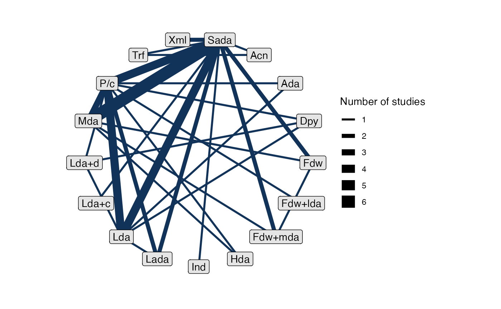
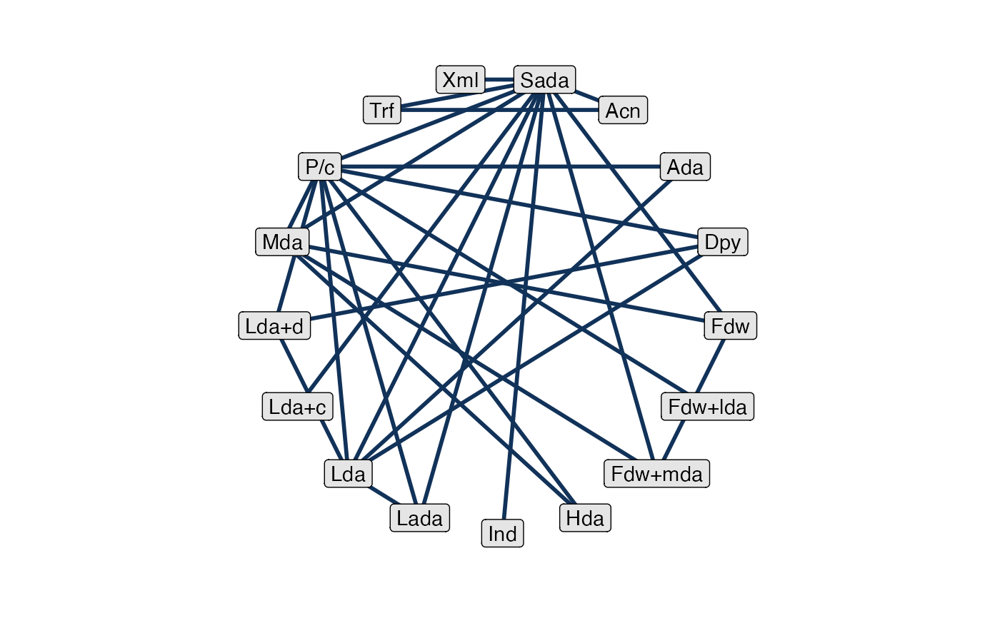
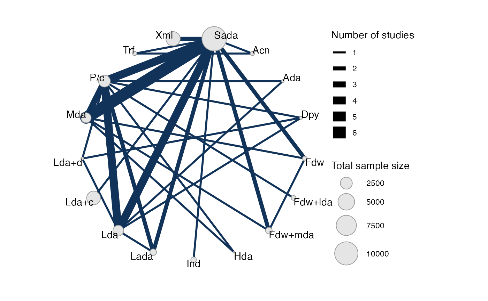
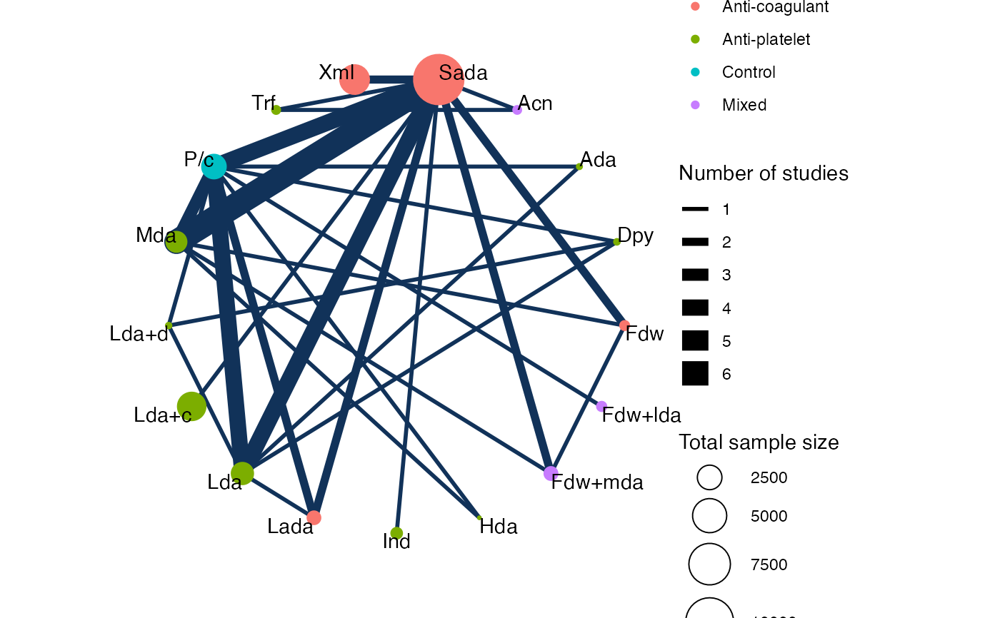
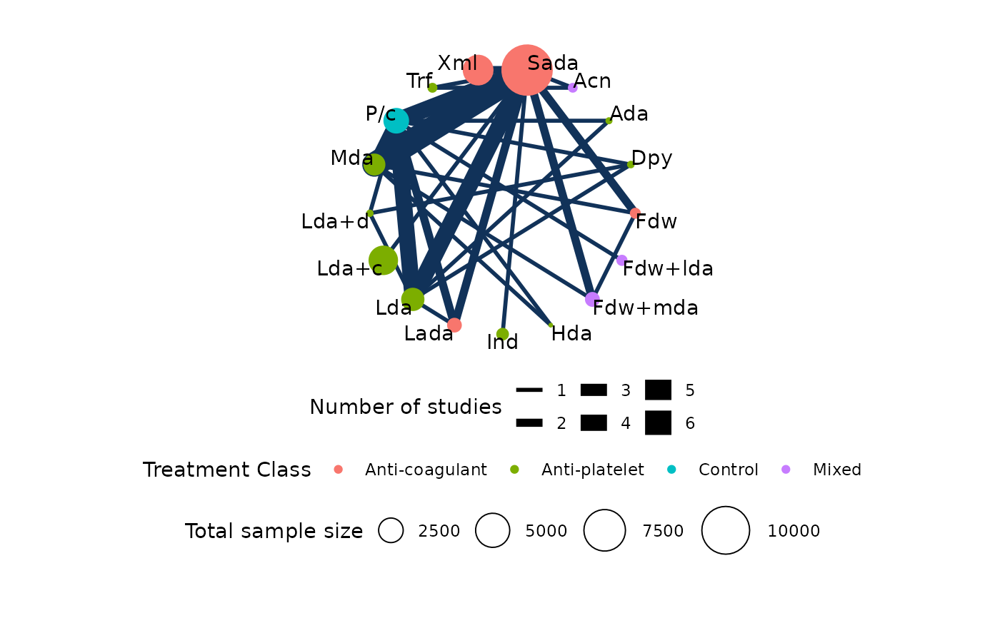
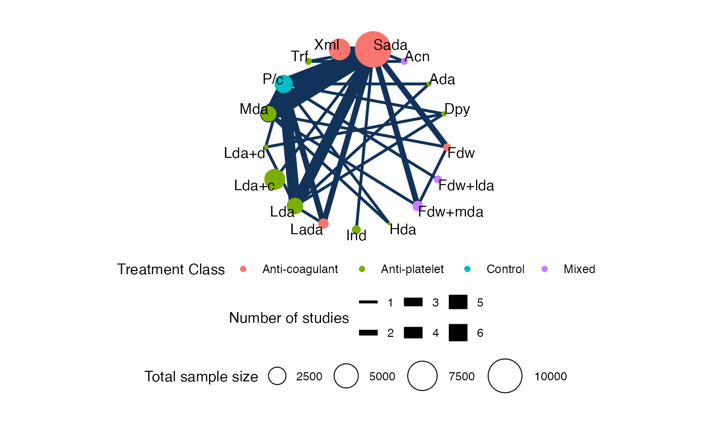
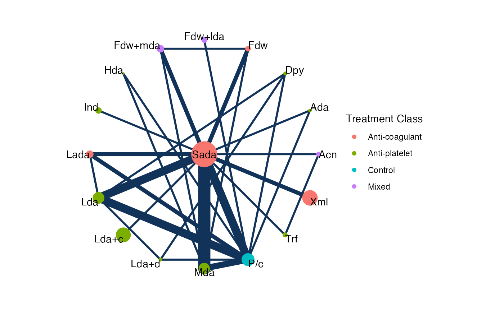

Create a network plot from a nma_data network object.
Usage
# S3 method for class 'nma_data'
plot(
x,
...,
layout,
circular,
weight_edges = TRUE,
weight_nodes = FALSE,
show_trt_class = FALSE,
nudge = 0
)Arguments
- x
A nma_data object to plot
- ...
Additional arguments passed to
ggraph()and on to the layout function- layout
The type of layout to create. Any layout accepted by
ggraph()may be used, including all of the layout functions provided by igraph.- circular
Whether to use a circular representation. See
ggraph().- weight_edges
Weight edges by the number of studies? Default is
TRUE.- weight_nodes
Weight nodes by the total sample size? Default is
FALSE.- show_trt_class
Colour treatment nodes by class, if
trt_classis set? Default isFALSE.- nudge
Numeric value to nudge the treatment labels away from the nodes when
weight_nodes = TRUE. Default is0(no adjustment to label position). A small value like0.1is usually sufficient.
Value
A ggplot object, as produced by
ggraph().
Details
The default is equivalent to layout = "linear" and circular = TRUE, which places the treatment nodes on a circle in the order defined by
the treatment factor variable. An alternative layout which may give good
results for simple networks is "sugiyama", which attempts to minimise the
number of edge crossings.
weight_nodes = TRUE requires that sample sizes have been specified for
any aggregate data in the network, using the sample_size option of
set_agd_*().
Examples
## Stroke prevention in atrial fibrillation
# Setting up the network
af_net <- set_agd_arm(atrial_fibrillation,
study = studyc,
trt = abbreviate(trtc, minlength = 3),
r = r,
n = n,
trt_class = trt_class)
af_net
#> A network with 26 AgD studies (arm-based).
#>
#> ------------------------------------------------------- AgD studies (arm-based) ----
#> Study Treatment arms
#> ACTIVE-W 2: Sada | Lda+c
#> AFASAK 1 3: Sada | Lda | P/c
#> AFASAK 2 4: Sada | Fdw | Fdw+mda | Mda
#> BAATAF 2: Lada | P/c
#> BAFTA 2: Sada | Lda
#> CAFA 2: Sada | P/c
#> Chinese ATAFS 2: Sada | Lda
#> EAFT 3: Sada | Mda | P/c
#> ESPS 2 4: Dpy | Lda | Lda+d | P/c
#> JAST 2: Lda | P/c
#> ... plus 16 more studies
#>
#> Outcome type: count
#> ------------------------------------------------------------------------------------
#> Total number of treatments: 17, in 4 classes
#> Total number of studies: 26
#> Reference treatment is: Sada
#> Network is connected
# Basic plot
plot(af_net)

# Turn off weighting edges by number of studies
plot(af_net, weight_edges = FALSE)

# Turn on weighting nodes by sample size
plot(af_net, weight_nodes = TRUE)

# Colour treatment nodes by class
plot(af_net, weight_nodes = TRUE, show_trt_class = TRUE)

# Nudge the treatment labels away from the nodes
plot(af_net, weight_nodes = TRUE, show_trt_class = TRUE, nudge = 0.1)

# Output may be customised using standard ggplot commands
# For example, to display the legends below the plot:
plot(af_net, weight_nodes = TRUE, show_trt_class = TRUE) +
ggplot2::theme(legend.position = "bottom",
legend.box = "vertical",
legend.margin = ggplot2::margin(0, 0, 0, 0),
legend.spacing = ggplot2::unit(0.5, "lines"))

# Choosing a different ggraph layout, hiding some legends
plot(af_net, weight_nodes = TRUE, show_trt_class = TRUE,
layout = "star") +
ggplot2::guides(edge_width = "none", size = "none")
